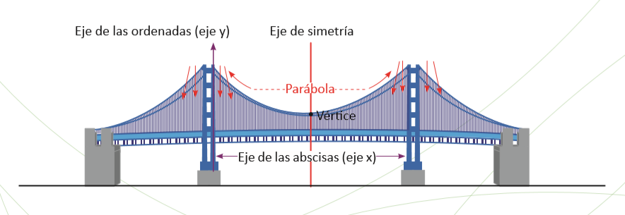
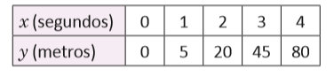
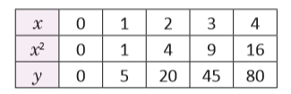
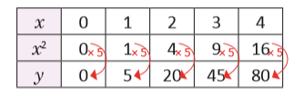

Función cuadrática de la forma y = ax² + c
En el siglo XVI, comenzaron a introducirse los símbolos que hoy se utilizan en el planteamiento de ecuaciones. Uno de los matemáticos que mayor influencia tuvo en este cambio favorable para el desarrollo del Álgebra, fue el francés François Viète (1540-1603), con el uso de símbolos para expresar la incógnita y los coeficientes de una ecuación, facilitando el estudio de ecuaciones de grado 2, 3 y 4, que a partir de la edad moderna se les comenzó a llamar “funciones”.
Dados los hallazgos de los matemáticos, se conoce en la actualidad la utilización de las funciones cuadráticas en las diferentes ramas de las ciencias naturales (Biología, Física y Química), así como en la economía y construcciones en la arquitectura, realizando aportes significativos para la humanidad
En esta unidad relacionarás magnitudes utilizando la proporcionalidad al cuadrado, ubicar pares ordenados en el plano cartesiano para graficar la función y = x² así como describir la variación de los valores de la función y = ax².
Al dejar caer una pelota desde un edificio, la distancia que recorre hasta llegar al suelo varía como lo muestra la siguiente tabla:
Donde x es el tiempo transcurrido (desde que se deja caer la pelota) y y es la distancia recorrida por la pelota después de x segundos.
a) Cuando x toma los valores 0, 1, 2, 3 y 4, ¿qué valores toma y? ¿Es y directamente proporcional a x?
b) En tu cuaderno, completa la siguiente tabla y responde, ¿qué relación hay entre x² y y?
c) ¿Cuál será la distancia recorrida después de 5 segundos?
d) Escribe y en términos de x.
a) Cuando x toma los valores 0, 1, 2, 3 y 4, entonces y toma los valores 0, 5, 20, 45 y 80, respectivamente (ver tabla).
Si y fuese directamente proporcional a x, entonces al cambiar x dos o tres veces, y también cambiaría dos o tres veces. Pero esto no ocurre.
Al cambiar x = 1 dos veces (x = 2) el valor de y = 5 cambia cuatro veces (y = 20).
Al cambiar x = 1 tres veces (x = 3) el valor de y = 5 cambia nueve veces (y = 45).
Por tanto, y no es directamente proporcional a x.
b) La tabla queda de la siguiente manera:
-

Al multiplicar por 5 cada una de las cantidades en x2, el resultado son sus respectivas cantidades en y:
Luego, y es igual a multiplicar 5 por x2.
c) La distancia recorrida después de 5 segundos será: 5(5²) = 5 (25) = 125 metros
d) y = 5x²
Una magnitud y es directamente proporcional al cuadrado de otra magnitud x si y = ax². El número a es una constante, es decir, un número real fijo.
Por ejemplo, la distancia que recorre una pelota al caer, es directamente proporcional al cuadrado del tiempo transcurrido desde que se deja caer.